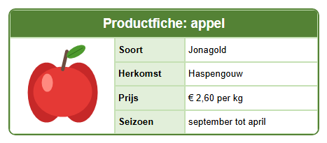

Leerpad › Les 5
Afbeeldingen

De knoppen voor afbeeldingen
Je vindt ze op het tabblad  Cel (C).
Klik eerst op de cel waar de afbeelding moet komen.
Cel (C).
Klik eerst op de cel waar de afbeelding moet komen.
 Afbeelding toevoegen: kies een bestand (png, jpg, gif of bmp).
Afbeelding toevoegen: kies een bestand (png, jpg, gif of bmp).

 afbeelding links, in het midden of rechts in de cel.
afbeelding links, in het midden of rechts in de cel. Afbeeldingsgrootte: Image original (ware grootte),
Image fit (passend in de cel, zonder te vervormen) of Image stretch (helemaal uitgerekt).
Afbeeldingsgrootte: Image original (ware grootte),
Image fit (passend in de cel, zonder te vervormen) of Image stretch (helemaal uitgerekt). Afbeelding verwijderen: haalt de afbeelding weer uit de cel.
Afbeelding verwijderen: haalt de afbeelding weer uit de cel.
Zo maak je het zelf
- Maak een tabel van 3 kolommen en 5 rijen. Voeg de bovenste rij samen voor de titel.
- Voeg in de eerste kolom de cellen van rij 2 tot en met 5 samen: daar komt de afbeelding.
- Maak de eerste kolom breed genoeg (sleep in de kolomkoppen) en de rijen hoog genoeg.
- Klik op de grote cel en klik op Afbeelding toevoegen.
Kies in de map
lessen\afbeeldingenhet bestandappel.png. - Klik op om de afbeelding te centreren.
- Typ in de andere cellen de gegevens: soort, herkomst, prijs en seizoen.
html\images
naast het programma, zodat je ontwerp blijft werken als je het origineel verplaatst. In de HTML-code zit de afbeelding
zelf ingebouwd: je webpagina is dus één bestand, zonder aparte afbeeldingen.Welke afbeelding kies je?
- Gebruik een kleine afbeelding: een foto van je gsm is veel te groot voor een cel en maakt de pagina zwaar.
- Een png met doorzichtige achtergrond past mooi op elke celkleur.
- Gebruik alleen afbeeldingen die je zelf gemaakt hebt of die je mag gebruiken.
Opdracht
Maak er een productfiche van een peer van: vervang de afbeelding door peer.png uit de map
lessen\afbeeldingen en pas de tekst aan. Probeer daarna Image stretch: wat gaat er mis?
Oplossing
Klik op de cel met de appel en klik op Afbeelding toevoegen: de nieuwe afbeelding vervangt de oude.
Kies peer.png en pas soort (bv. Conference), prijs en titel aan. Met Image stretch wordt de
afbeelding uitgerekt tot de hele cel: de peer wordt breder en ziet er vervormd uit. Kies daarom Image fit
als de afbeelding niet in de cel past.
Werk je onder Linux? Open het voorbeeld dan zelf met Openen tabel designer: map
lessen, bestand les05-productfiche.htd.